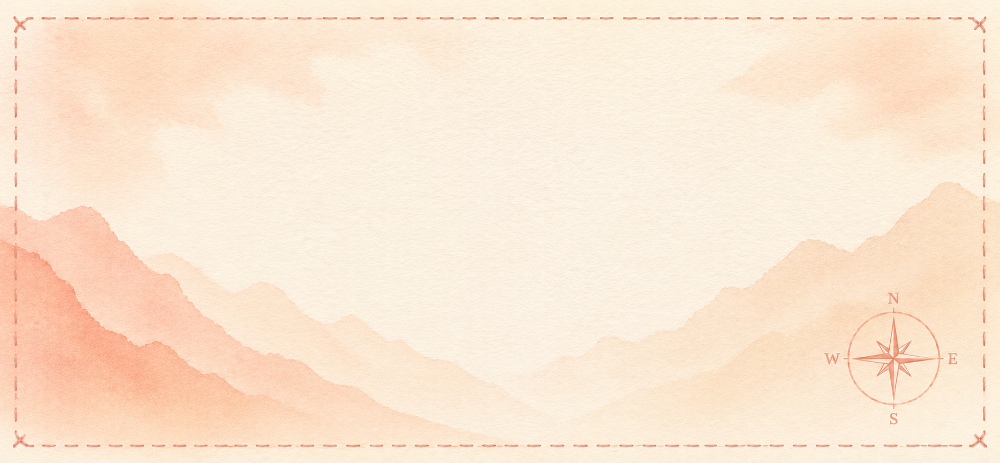
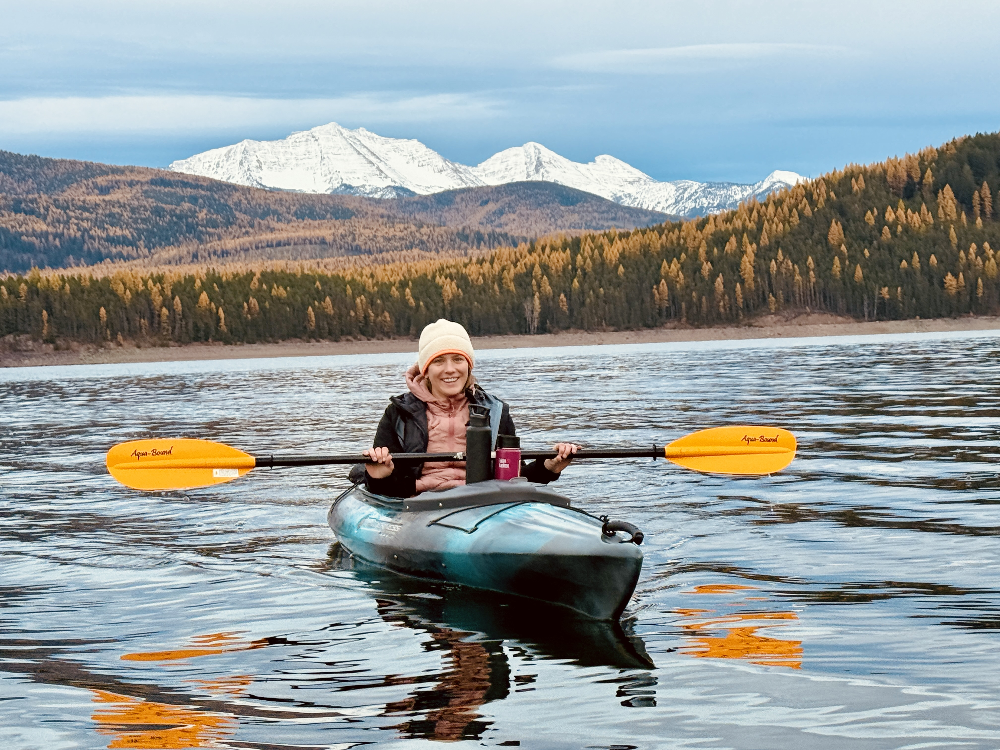
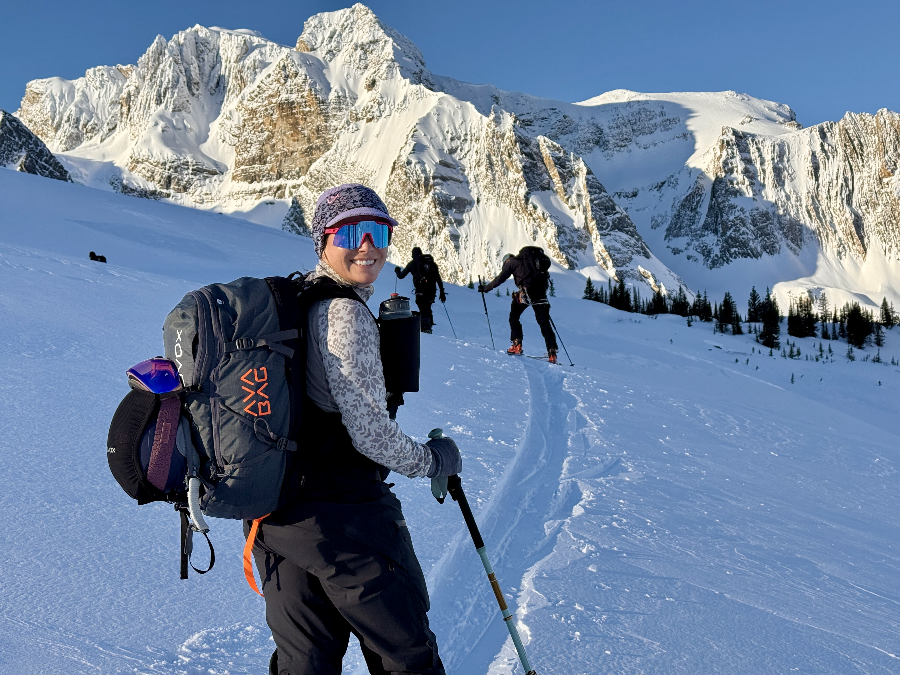

Nurse · Scientist · Innovator · Advocate
I've been at the bedside, on clinical trial teams, and in the field. I connect the dots that others don't even know exist.
I'm Alexa Oestmann, BSN-RN — a nurse-scientist at the intersection of patient care, clinical research, and healthcare innovation.
Most people see the summit photo. They don't see the approach: the years of learning the terrain, studying the map, choosing partners you can trust when the conditions get hard.
I've spent my career on that approach. The mountain is the US healthcare system: complex, demanding, and imperfect. Access. Innovation. The gap between what medicine can do and who actually gets it.
I climb because someone has to know the terrain. Because the people at the top and the people at the bottom need someone who knows both. That's the invisible string.
Background
My path hasn't been a straight line, and that's the point. I bring a unique lens: the ability to hold two scales in my head at once. The individual patient in front of me, and the entire system around them. Most people see one or the other. I've never been able to unsee both.
Nebraska, Africa, a hospital bedside, clinical trials, patient navigation, industry: on paper these look like disconnected chapters. They're not. Every stop trained the same instinct: zoom in on the person, zoom out to the system, and never let go of either view.
I grew up in rural Nebraska, where my mother was a nurse and I learned early that where you live shapes what care you can access. That was my first system. A biology degree led me to the Smithsonian Conservation Biology Institute in Virginia, where I worked in the wildlife endocrinology lab and learned what it actually means to be a scientist: how to ask a good question, test it rigorously, and trust data over assumption. From there, wildlife research across East and South Africa taught me to think in ecosystems, to see how human, animal, and environmental health are inseparable.
That realization brought me to nursing, where the individual finally had a face. I started at the bedside during COVID in rural Montana, a formative, humbling entry into the profession that exposed every crack in the system and demanded resilience and creativity I didn't know I had. From there I moved into clinical research, coordinating 26 industry-sponsored trials. I'll never forget watching patients gain access to therapies that didn't exist for them anywhere else, and seeing what that access did to their lives. That feeling is what made the systems work feel worth it.
As an Oncology and Pulmonology Navigator, I learned how brutal it truly is to move through a broken system when you're already sick. That experience led me into industry, first as a cardiometabolic educator at Novo Nordisk, and now as a Clinical Science Liaison at Henlius USA. The scale changed. The lens didn't. I'm still holding the patient and the system in the same frame, just from a different elevation.
That's the invisible string: not a straight path, but a constant, simultaneous focus on the person and the system that surrounds them. You can't see one clearly without the other.
Below is the trail that connects it all. Click through each stop to see the thread for yourself.

The invisible string through all of it is the same: the patient, and the systems that either support them or fail them. That's the lens I bring into every room now — whether it's a bedside, a boardroom, or somewhere in between.
Experience
Clinical Foundation
Bedside nursing · Clinical research · Oncology navigation
My clinical career began at the bedside in oncology and medical-surgical nursing at the start of the COVID-19 pandemic — a formative and humbling entry point into the profession. From there I moved into specialty pulmonary nursing, then into clinical research coordinating 26 industry-sponsored trials across oncology, cardiometabolic, rheumatology, and rare disease.
Later I served as an Oncology Nurse Navigator, helping patients find their footing and move forward during some of the most uncertain moments of their lives.
Working in rural Montana meant becoming fluent in the full spectrum of access barriers — geographic distance, health literacy gaps, financial hardship, prior authorizations, specialty pharmacy navigation, and connecting patients to assistance programs that could actually help. Access is never just a clinical question. It's a human one.
What nursing gave me that no other training could: the ability to hold a patient's individual reality and a system's complexity at the same time — and find a way through both.
Scientific Communication & Field Medical
Medical education · Clinical Science Liaison, Henlius USA (current) · Field medical
At Novo Nordisk I delivered evidence-based clinical education across cardiometabolic disease to physicians, advanced practice providers, and clinic staff across Western Montana — learning that the gap between clinical evidence and clinical practice is often a communication and access problem, not a science problem.
I currently serve as a Clinical Science Liaison at Henlius USA, contracted through Randstad. In this role, I'm engaging investigators, gathering site-level insights, supporting patient advocacy group relationships, and helping sponsors and sites speak the same language. I've also supported congress and conference planning, and serve as a liaison between clinical teams and patient advocacy organizations.
Innovation & Digital Health
AI platform development · Clinical monitoring · Medical writing
I'm an AI builder — because the tools we need don't always exist yet. When I identified a gap in how our team was monitoring patient data across trials — no clear way to visualize progress in real time — I built an AI-powered medical monitoring and data visualization platform. It solved the immediate problem. The organization is now expanding it across its broader trial portfolio.
I'm currently completing the AI & Nursing Foundations program alongside leading nurse innovators, and a Medical Writing & AI course — because I believe the clinicians who understand both the science and the technology will shape what healthcare looks like next. Especially in the rural and underserved communities that are too often the last to benefit from innovation.
Beyond Work


Northwest Montana is as good a reason as any to close the laptop. You'll find me on skis, out on a trail run, or somewhere on the water. When I'm not exploring my own backyard I'm planning my next travel adventure. I'm also obsessed with my dog and two cats, and can usually be found in the kitchen cooking something ambitious or with my nose in a good book.
Get in Touch
If you're working somewhere on the mountain — in clinical science, patient access, medical affairs, health outcomes, or digital health — I'd love to talk. Whether you're building something, hiring for something, or just want to compare notes on the terrain.
Connect on LinkedInI'm especially interested in conversations about